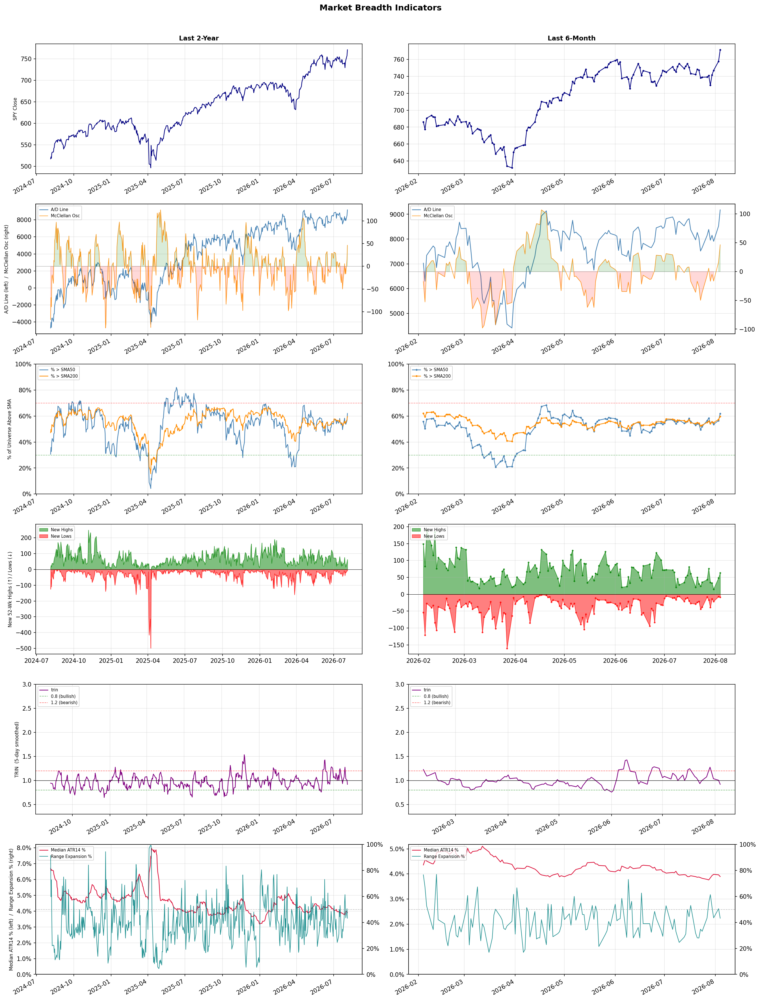

A daily market breadth and sector rotation report for active investors
| Item | Read |
|---|---|
| Regime | Risk-On |
| Risk posture | Aggressive |
| Universe | 1,335 stocks tracked · 63 new 52-week highs · 30 active swing setups |
| Breadth | 62.0% of tracked stocks are above SMA50, new highs exceed new lows (63 vs 9) |
| Leadership | Oil & Gas Refining & Marketing, Medical Instruments & Supplies, and Insurance - Life |
| Weakest groups | Utilities - Independent Power Producers, Chemicals, and Utilities - Renewable |
Use this report to prioritize research and chart review; validate entries, stops, liquidity, earnings, and risk before acting.
| Item | Read |
|---|---|
| Primary read | Risk-On regime with Aggressive risk posture. |
| Research queue | PBF, VLO, MPC, DINO, UGP |
| Leadership focus | Oil & Gas Refining & Marketing, Medical Instruments & Supplies, and Insurance - Life |
| Caution list | Utilities - Independent Power Producers, Chemicals, and Utilities - Renewable |
| Review prompt | Check extension risk, chart location, fundamentals, valuation, and earnings before using any research row. |
| Item | Read |
|---|---|
| Primary read | 0 active risk warnings; use screen output as watchlist input only. |
| Bullish screens | BAX, EXPE, VIK, URBN, CCL |
| Bearish screens | none |
| Alerts / levels | Automated trigger, stop, ATR, liquidity, reward/risk, and event-risk levels are pending future enrichment. |
| Review prompt | Open the linked chart, define trigger and invalidation, then check liquidity and event risk independently. |
Risk Posture: Aggressive — screen backdrop shows broad participation; still validate each setup independently
Metric context: McClellan below -50 = elevated selling pressure; below -100 = washout territory. Range Expansion = share of stocks with daily range above their 20-day average. Signal Density = share of tracked names appearing in signal screens.
| Breadth Date | % > SMA50 | % > SMA200 | New Highs | New Lows | McClellan | Median Range | Avg Range | Median ATR14 | Range Expansion | Signal Density |
|---|---|---|---|---|---|---|---|---|---|---|
| 2026-08-04 | 62.0% | 59.7% | 63 | 9 | 46.4 | 3.5% | 4.1% | 3.9% | 43.2% | 3.0% |

Prior comparison date: August 3, 2026
| Metric | Prior | Current | Change |
|---|---|---|---|
| Regime | Selective Risk-On | Risk-On | changed |
| Risk Posture | Selective | Aggressive | changed |
| % > SMA50 | 56.6% | 62.0% | +5.4 pts |
| % > SMA200 | 57.4% | 59.7% | +2.3 pts |
| New Highs | 48 | 63 | +15 |
| New Lows | 7 | 9 | -2 |
Top-10 industries entering: Computer Hardware and Software - Application. Top-10 industries leaving: Banks - Diversified and Oil & Gas Integrated. New multi-signal long setups: AS, AUR, AXTA, BAC, BAX, ETN, EXPE, FIVN, JPM, SAN. New multi-signal short setups: none.
| Status | Tickers | Read |
|---|---|---|
| Added | AUR, AXTA, BAC, BAX, ETN, EXPE, FIVN, JPM | New technical screen matches vs prior report. |
| Removed | AVTX, BBVA, BMY, DRH, DXCM, EWTX, FSLY, HTZ | No longer present in today's technical screen matches. |
| Still Active | AS, CCL, GTES, IVZ, MPLX, MT, MTCH, NTAP | Appeared in both current and prior reports. |
| Promoted | AS, UMAC, URBN | Model Screen Score improved by at least 15 points. |
| Downgraded | none | Model Screen Score declined by at least 15 points. |
| Direction | Industry | ETF | Prior Rank | Current Rank | Days | Rank Change |
|---|---|---|---|---|---|---|
| Rose | Oil & Gas Refining & Marketing | CRAK | 73 | 1 | 42 | +72 |
| Rose | Oil & Gas Integrated | XLE | 83 | 11 | 35 | +72 |
| Rose | Copper | COPX | 87 | 18 | 28 | +69 |
| Rose | Steel | SLX | 79 | 12 | 35 | +67 |
| Rose | Software - Application | IGV | 75 | 9 | 42 | +66 |
Bull: The Oil & Gas Refining & Marketing sector is experiencing a bullish trend due to a combination of rising oil prices and increased demand for refined products, as indicated by the recent headlines highlighting the Oil Refiners ETF (CRAK) hitting a new 52-week high and being recognized as a top-performing ETF area. Additionally, the optimism surrounding potential de-escalation in the Middle East suggests a more stable geopolitical environment, which could further support oil prices and refining margins, driving investor interest in top refining stocks like Marathon Petroleum. The anticipated forward EPS growth of over 45% for key players in the sector underscores the strong fundamentals propelling this positive momentum.
Bear: While the recent performance of the Oil & Gas Refining & Marketing sector, as reflected in the CRAK ETF hitting a new 52-week high, may seem promising, it is crucial to recognize the potential volatility and underlying risks in the market. The optimism surrounding rising oil prices and geopolitical stability may be short-lived, especially given the ongoing uncertainties in global supply chains, regulatory pressures for cleaner energy, and the potential for demand destruction due to economic slowdowns or shifts toward renewable energy sources. Furthermore, the projected 45% forward EPS growth could be overly optimistic if refiners face increased operational costs or if refining margins narrow due to fluctuating crude prices or competitive pressures.
Verdict: The Oil & Gas Refining & Marketing sector is likely experiencing a bullish trend driven by rising oil prices and strong demand for refined products, bolstered by positive investor sentiment and anticipated robust earnings growth among key players. However, a key risk lies in potential volatility from geopolitical uncertainties, regulatory pressures, and the threat of demand destruction as economies transition toward renewable energy sources, which could impact refining margins and operational costs. Investors should remain cautious and closely monitor these external factors while considering positions in leading refining stocks.
Sources: Yahoo Finance, Google News
Bull: The Oil & Gas Integrated sector is likely experiencing a rise in relative strength due to increasing fair value estimates for major oil stocks, driven by expectations of higher oil prices as indicated by headlines from Morningstar and Moomoo. Additionally, the optimism surrounding the reopening of the Strait of Hormuz, a critical oil shipping route, suggests potential supply stability and further price support, which could enhance investor sentiment in the sector despite recent afternoon declines in energy stocks.
Bear: While rising fair value estimates and optimism about the Strait of Hormuz reopening may suggest short-term bullish sentiment, the recent declines in energy stocks indicate underlying weakness and investor skepticism about sustained price increases. Additionally, the oil market remains vulnerable to geopolitical tensions, economic slowdowns, and potential shifts towards renewable energy, which could undermine demand and lead to a more prolonged downturn in the sector. Therefore, the current relative strength trend may not be a reliable indicator of future performance, as it could be masking deeper structural challenges facing the industry.
Verdict: The Oil & Gas Integrated sector's recent rise in relative strength is primarily driven by increasing fair value estimates for major oil stocks, fueled by expectations of higher oil prices and the potential reopening of the Strait of Hormuz, which could stabilize supply. However, investors should remain cautious of underlying weaknesses indicated by recent stock declines and the risk of geopolitical tensions, economic slowdowns, and a shift towards renewable energy, which could jeopardize demand and lead to a downturn in the sector. It is advisable to monitor these factors closely before making investment decisions.
Sources: Yahoo Finance, Google News
Bull: Copper is experiencing a rise in relative strength primarily due to its critical role in the electrification and AI boom, as highlighted in multiple headlines. The increasing demand for copper in electric vehicles, renewable energy infrastructure, and advanced technologies positions it as a vital commodity, akin to "the new crude," driving investor interest in ETFs like COPX. Furthermore, the recent performance of copper stocks, as noted in reports on top performers and investment recommendations, underscores the sector's robust growth potential amid broader market volatility, particularly with the struggles of the tech sector (Mag-7) creating a shift in investor focus towards more stable commodities like copper.
Bear: While the narrative surrounding copper's role in electrification and AI is compelling, it overlooks significant headwinds that could impede its growth. The recent surge in copper prices may be driven more by speculative trading and short-term market dynamics rather than sustainable demand, especially as global economic uncertainties loom and potential recessions could dampen industrial activity. Additionally, the mining sector faces challenges such as rising operational costs, regulatory hurdles, and environmental concerns, which could limit the profitability and scalability of copper production despite the bullish sentiment.
Verdict: The rising trend in the copper industry is fundamentally driven by robust demand stemming from the electrification of transportation and renewable energy initiatives, positioning copper as a critical commodity for future technologies. However, investors should remain cautious of potential headwinds, including economic uncertainties and rising operational costs in the mining sector, which could undermine sustainable growth and profitability in the long term.
Sources: Yahoo Finance, Google News
Bull: The steel industry is experiencing a bullish trend primarily due to increased demand driven by advancements in artificial intelligence and infrastructure spending, as highlighted by the headlines discussing AI's impact on the VanEck Steel ETF (SLX) and the recent legislative support for steelmakers. Additionally, rising steel prices and the performance of key players like Steel Dynamics indicate strong fundamentals, further bolstered by favorable government policies that enhance the competitive landscape for steel producers. This combination of demand growth, supportive legislation, and rising prices positions the steel sector for continued strength relative to other industries.
Bear: While the steel industry may currently benefit from rising prices and legislative support, these factors could be temporary and driven by cyclical demand rather than sustainable growth. The looming threat of economic slowdown, potential overcapacity in production, and the increasing adoption of alternative materials in construction and manufacturing could undermine the long-term viability of the steel sector. Additionally, the reliance on government policies for support may expose the industry to significant risks if such measures are rolled back or fail to materialize as expected.
Verdict: The steel industry's bullish trend is primarily driven by robust demand from infrastructure spending and advancements in artificial intelligence, which are enhancing production efficiency and increasing consumption. However, key risks include the potential for an economic slowdown and overcapacity, which could lead to a decline in prices and demand, undermining the sector's long-term growth prospects. Investors should monitor economic indicators and production levels closely to gauge the sustainability of this upward trend.
Sources: Yahoo Finance, Google News
Bull: The Software - Application sector is experiencing a rise in relative strength primarily due to the positive sentiment surrounding AI technologies and their integration into various applications, as highlighted by the strong performance of Palantir following its Q2 earnings report. Additionally, the broader market optimism driven by potential geopolitical stability, as indicated by the hopes for a US-Iran truce and the reopening of the Strait of Hormuz, is prompting investors to rotate into tech stocks, particularly those in the software space, which are perceived as resilient and poised for growth amidst an AI boom.
Bear: While the recent rally in the Software - Application sector may seem driven by positive sentiment surrounding AI and geopolitical stability, it overlooks the underlying structural challenges facing many companies in this space. The significant sell-off in software stocks suggests that investor enthusiasm may be overly reliant on short-term narratives rather than sustainable growth fundamentals, and companies like C3.ai and UiPath, which failed to participate in the rally, highlight the risks of overvaluation and the potential for a broader correction as the market reassesses the true impact of AI on profitability.
Verdict: The Software - Application sector's rise is fundamentally driven by the integration of AI technologies into various applications, which is fostering investor optimism and attracting capital into tech stocks perceived as resilient and growth-oriented. However, a key risk lies in the potential overvaluation of these companies, as evidenced by the sell-off of stocks like C3.ai and UiPath, suggesting that the current rally may not be supported by sustainable growth fundamentals, which could lead to a market correction if investor sentiment shifts. Investors should remain cautious and focus on companies with solid fundamentals and clear pathways to profitability amidst the AI boom.
Sources: Yahoo Finance, Google News
| Direction | Industry | ETF | Prior Rank | Current Rank | Days | Rank Change |
|---|---|---|---|---|---|---|
| Fell | Semiconductors | SOXX | 11 | 72 | 42 | -61 |
| Fell | Electrical Equipment & Parts | XLI | 24 | 84 | 42 | -60 |
| Fell | Gambling | N/A | 17 | 73 | 28 | -56 |
| Fell | Healthcare Plans | IHF | 1 | 52 | 42 | -51 |
| Fell | Beverages - Non-Alcoholic | XLP | 19 | 70 | 28 | -51 |
Bear: While the recent rally in semiconductor stocks may suggest a temporary risk-on sentiment, it is crucial to recognize that this sector is still grappling with significant headwinds, including persistent supply chain disruptions, geopolitical tensions, and a looming economic slowdown that could dampen demand for chips across various industries. Additionally, the 22% drop in semiconductor stocks reflects underlying structural issues, and any short-term gains driven by individual stocks or headlines may be fleeting as investors reassess the sustainability of growth in a challenging macroeconomic environment.
Bull: The semiconductor sector is experiencing a relative strength decline primarily due to macroeconomic concerns and a broader market sell-off, as indicated by the 22% drop in semiconductor stocks. Despite recent positive headlines, such as Intel's strong performance in the AI space and significant gains in individual stocks like Applied Optoelectronics, the overall sentiment is dampened by fears of geopolitical tensions, particularly related to the U.S.-China trade dynamics affecting optics, and a potential slowdown in demand. However, the recent rally in chip stocks suggests a risk-on sentiment among investors, indicating potential for recovery as the market stabilizes.
Verdict: The semiconductor industry's recent decline can be attributed to macroeconomic concerns, including supply chain disruptions and geopolitical tensions, particularly surrounding U.S.-China relations, which have created uncertainty about future demand. While the recent rally in chip stocks may indicate a temporary rebound, the key risk remains the potential for a sustained economic slowdown that could further impact demand across various sectors, necessitating cautious investment strategies. Investors should closely monitor macroeconomic indicators and geopolitical developments to assess the sustainability of any recovery in semiconductor stocks.
Sources: Yahoo Finance, Google News
Bear: While the bull analyst highlights a resurgence in the U.S. manufacturing industry, it's crucial to note that the electrical equipment and parts sector is facing significant challenges, including rising raw material costs and supply chain disruptions that could dampen profitability. Additionally, the optimism surrounding geopolitical developments may be fleeting, and the shift towards technology and AI could lead to a long-term structural decline in demand for traditional electrical equipment, as companies prioritize investments in more innovative and high-growth sectors. This suggests that the relative strength decline may not just be a temporary phase but indicative of deeper issues within the electrical equipment industry.
Bull: The Electrical Equipment & Parts industry is experiencing a decline in relative strength primarily due to broader market dynamics favoring sectors like technology and AI, as highlighted by the CNBC article on the industrials sector becoming as valuable as tech stocks. Additionally, the recent headlines indicate a strong resurgence in the U.S. manufacturing industry, which may be overshadowing the more specialized segments within electrical equipment, leading to a relative underperformance. The optimism surrounding geopolitical developments, such as the U.S.-Iran truce hopes, may also be shifting investor focus towards sectors perceived as more directly benefiting from these macro trends.
Verdict: The Electrical Equipment & Parts industry is likely experiencing a decline due to a combination of rising raw material costs and supply chain disruptions, which are eroding profitability amid a broader market shift towards technology and AI sectors. While the resurgence in U.S. manufacturing may provide short-term optimism, the key risk lies in the potential for a long-term structural decline as companies increasingly prioritize investments in innovative technologies over traditional electrical equipment. Investors should remain cautious and consider reallocating resources towards sectors with stronger growth prospects.
Sources: Yahoo Finance, Google News
Bear: While the bull thesis highlights ongoing interest in casino stocks, it underestimates the significant headwinds posed by rising regulatory pressures and tax increases, which could severely impact profitability and growth potential in the gambling sector. Additionally, the recent sell-off in European gaming stocks suggests a broader market skepticism about the industry's resilience in the face of economic uncertainties, indicating that investor confidence may be waning rather than merely cautious. As such, the outlook for gambling stocks remains precarious, with potential for further declines in relative strength as these challenges persist.
Bull: The recent decline in the relative strength of the gambling industry can be attributed to rising regulatory pressures and tax increases, as highlighted in the article from The Guardian, which discusses analysts' concerns about British gambling firms facing higher taxes. Additionally, the broader market sentiment appears to be cautious, as indicated by the European Gaming headline noting a sell-off, which may reflect investor apprehension about the industry's growth prospects amidst economic uncertainties. Despite these challenges, the ongoing interest in casino stocks, as mentioned in The Motley Fool and 24/7 Wall St., suggests that there are still significant opportunities for growth and investment in the sector.
Verdict: The gambling industry's decline is primarily driven by rising regulatory pressures and tax increases, which threaten profitability and growth potential. The key risk highlighted by the bear case is the waning investor confidence, as evidenced by the recent sell-off in European gaming stocks, suggesting that the industry's challenges may lead to further declines in relative strength. Investors should approach the sector with caution, closely monitoring regulatory developments and market sentiment before making investment decisions.
Sources: Google News
Bear: While the bull analyst attributes the relative weakness in the Healthcare Plans sector to profit-taking and mixed earnings, a more pressing concern is the increasing regulatory scrutiny and potential policy changes that could undermine profitability across the industry. The headlines indicate a growing skepticism regarding the sustainability of growth for major players like UnitedHealth and Humana, suggesting that the market may be anticipating headwinds such as rising costs, increased competition from new entrants, and a shift towards value-based care models that could further compress margins. This uncertainty could lead to a prolonged period of underperformance for the sector, making it a less attractive investment opportunity.
Bull: The relative weakness in the Healthcare Plans sector, as indicated by the falling trend against other industries, can likely be attributed to recent profit-taking after strong performances, particularly seen in UnitedHealth's pullback from its 52-week high. Additionally, mixed earnings reports in Q2, highlighted by Morningstar, suggest that while the sector retains defensive characteristics, uncertainty around regulatory changes and competitive pressures may be causing investors to reassess their positions. This cautious sentiment is reflected in the headlines discussing varying outlooks for major players like Humana and UnitedHealth, leading to a more cautious investment environment.
Verdict: The recent decline in the Healthcare Plans sector appears primarily driven by profit-taking following strong past performances and mixed earnings reports, particularly from major players like UnitedHealth. However, the key risk lies in increasing regulatory scrutiny and potential policy changes that could significantly impact profitability, suggesting investors should remain cautious and closely monitor developments in healthcare regulations and competitive dynamics before making investment decisions.
Sources: Yahoo Finance, Google News
Bear: While the bull analyst attributes the relative weakness in the Beverages - Non-Alcoholic sector to broader market dynamics and a shift towards cyclical stocks, it's crucial to recognize that consumer preferences are evolving, with increasing health consciousness leading to a decline in sugary beverage consumption. Additionally, rising input costs and supply chain disruptions, exacerbated by geopolitical tensions, could further pressure margins for non-alcoholic beverage companies, making it difficult for them to maintain profitability in a competitive landscape increasingly dominated by healthier alternatives.
Bull: The relative weakness in the Beverages - Non-Alcoholic sector can be attributed to broader market dynamics, as indicated by the recent headlines highlighting a general rise in consumer stocks, which suggests a rotation towards more cyclical sectors. Additionally, the focus on Wall Street analysts' target prices for major players like Philip Morris and Procter & Gamble indicates that investor sentiment may be shifting towards companies perceived as having stronger growth potential or more favorable valuations, thereby sidelining traditional non-alcoholic beverage stocks. This shift could be further exacerbated by macroeconomic factors such as reopening hopes in regions like the Strait of Hormuz, which may boost sectors more sensitive to economic recovery.
Verdict: The recent decline in the Beverages - Non-Alcoholic sector is primarily driven by shifting consumer preferences towards healthier alternatives and a growing health consciousness, which is impacting demand for traditional sugary beverages. Key risks include rising input costs and supply chain disruptions, particularly in light of geopolitical tensions, which could further squeeze margins and hinder profitability for established players in this competitive landscape. Investors should closely monitor these trends and consider reallocating towards companies that are adapting to these consumer shifts or exploring healthier product lines.
Sources: Yahoo Finance, Google News
| Industry | Rank | ETF | 7d | 14d | 28d | 42d | Chg 42d | Size | 20D | 60D | Composite | Active Setups |
|---|---|---|---|---|---|---|---|---|---|---|---|---|
| Oil & Gas Refining & Marketing | 1 | CRAK | 1 | 1 | 28 | 73 | +72 | 7 | 17.7% | 21.6% | 0.959 | 0 |
| Medical Instruments & Supplies | 2 | N/A | 23 | 25 | 22 | 64 | +62 | 13 | 9.5% | 23.1% | 0.851 | 0 |
| Insurance - Life | 3 | N/A | 3 | 10 | 18 | 28 | +25 | 7 | 7.5% | 14.4% | 0.839 | 0 |
| Diagnostics & Research | 4 | N/A | 14 | 2 | 4 | 9 | +5 | 16 | 4.3% | 44.3% | 0.839 | 1 |
| Apparel Retail | 5 | XRT | 8 | 40 | 62 | 40 | +35 | 8 | 12.1% | 17.6% | 0.838 | 1 |
| Travel Services | 6 | N/A | 15 | 34 | 33 | 15 | +9 | 10 | 8.3% | 12.9% | 0.832 | 1 |
| REIT - Hotel & Motel | 7 | XLRE | 11 | 9 | 13 | 3 | -4 | 9 | 4.6% | 23.1% | 0.819 | 0 |
| Computer Hardware | 8 | XLK | 59 | 51 | 34 | 8 | 0 | 15 | 9.5% | 24.1% | 0.802 | 1 |
| Software - Application | 9 | IGV | 21 | 18 | 39 | 75 | +66 | 74 | 9.7% | 14.6% | 0.800 | 1 |
| Medical Devices | 10 | N/A | 33 | 36 | 29 | 48 | +38 | 21 | 5.1% | 18.7% | 0.766 | 1 |
Rank columns (7d–42d) show the industry's rank that many trading days ago — lower is stronger. Chg 42d = rank change vs 42 trading days ago — positive means the industry moved up. 20D and 60D are the mean stock return within the industry over that period. Active Setups: count of today's swing-trade candidates from this industry appearing across all signal screens.
| Industry | Rank | ETF | 7d | 14d | 28d | 42d | Chg 42d | Size | 20D | 60D | Composite | Active Setups |
|---|---|---|---|---|---|---|---|---|---|---|---|---|
| Utilities - Independent Power Producers | 88 | XLU | 83 | 81 | 70 | 70 | -18 | 5 | -6.1% | -15.7% | 0.094 | 0 |
| Chemicals | 87 | N/A | 80 | 79 | 84 | 83 | -4 | 8 | -3.7% | -22.9% | 0.117 | 1 |
| Utilities - Renewable | 86 | N/A | 87 | 85 | 83 | 54 | -32 | 7 | -3.0% | -16.0% | 0.152 | 0 |
| Other Industrial Metals & Mining | 85 | N/A | 86 | 88 | 86 | 57 | -28 | 21 | -2.5% | -23.7% | 0.170 | 0 |
| Electrical Equipment & Parts | 84 | XLI | 85 | 82 | 48 | 24 | -60 | 12 | -10.6% | -8.9% | 0.183 | 1 |
| Grocery Stores | 83 | N/A | 79 | 71 | 64 | 67 | -16 | 5 | -4.6% | -4.7% | 0.186 | 0 |
| REIT - Diversified | 82 | N/A | 44 | 32 | 61 | 71 | -11 | 5 | -3.0% | -4.2% | 0.188 | 0 |
| REIT - Mortgage | 81 | N/A | 73 | 73 | 69 | 69 | -12 | 12 | -2.2% | -8.4% | 0.197 | 0 |
| Solar | 80 | TAN | 84 | 80 | 67 | 47 | -33 | 8 | -3.3% | 0.3% | 0.219 | 0 |
| Utilities - Regulated Electric | 79 | XLU | 53 | 50 | 44 | 51 | -28 | 29 | -3.8% | -1.3% | 0.231 | 0 |
Rank columns (7d–42d) show the industry's rank that many trading days ago — lower is stronger. Chg 42d = rank change vs 42 trading days ago — positive means the industry moved up. 20D and 60D are the mean stock return within the industry over that period. Active Setups: count of today's swing-trade candidates from this industry appearing across all signal screens.
These are research candidates from top-ranked stocks, capped at five names per industry to avoid over-concentration. Returns shown (60D, 120D, 250D) are historical — they reflect where prices have already moved, not forward expectations. Extension Risk flags names that may require extra patience or a better entry point. They are not buy signals.
Chart: TV = TradingView chart (opens in browser); PDF = local chart file (if downloaded).
| Ticker | Name | Industry | Industry Rank | Market Cap | 60D Hist | 120D Hist | 250D Hist | Extension Risk | Research Reason | Chart |
|---|---|---|---|---|---|---|---|---|---|---|
| PBF | PBF Energy | Oil & Gas Refining & Marketing | 1 | N/A | 62.3% | 91.1% | 178.6% | Extended | Top-ranked in industry; extended | TV |
| VLO | Valero Energy | Oil & Gas Refining & Marketing | 1 | N/A | 30.6% | 54.8% | 125.6% | Constructive | Top-ranked in industry | TV |
| MPC | Marathon Petroleum | Oil & Gas Refining & Marketing | 1 | N/A | 29.0% | 53.1% | 85.1% | Constructive | Top-ranked in industry | TV |
| DINO | HF Sinclair | Oil & Gas Refining & Marketing | 1 | N/A | 25.2% | 53.1% | 101.7% | Constructive | Top-ranked in industry | TV |
| UGP | Ultrapar Participacoes | Oil & Gas Refining & Marketing | 1 | N/A | 7.1% | 23.4% | 106.5% | Constructive | Top-ranked in industry | TV |
| AVTR | Avantor | Medical Instruments & Supplies | 2 | N/A | 64.6% | 22.6% | 17.5% | Extended | Top-ranked in industry; extended | TV |
| AZTA | Azenta | Medical Instruments & Supplies | 2 | N/A | 62.3% | 0.5% | 12.0% | Extended | Top-ranked in industry; extended | TV |
| BAX | Baxter International Inc | Medical Instruments & Supplies | 2 | N/A | 62.1% | 29.2% | 24.1% | Extended | Top-ranked in industry; extended | TV |
| XRAY | Dentsply Sirona | Medical Instruments & Supplies | 2 | N/A | 30.2% | 2.4% | 1.6% | Constructive | Top-ranked in industry | TV |
| SOLV | Solventum | Medical Instruments & Supplies | 2 | N/A | 22.7% | 9.3% | 21.4% | Constructive | Top-ranked in industry | TV |
| LNC | Lincoln National | Insurance - Life | 3 | N/A | 30.8% | 19.5% | 21.2% | Constructive | Top-ranked in industry | TV |
| PRU | Prudential Financial | Insurance - Life | 3 | N/A | 24.2% | 19.6% | 19.7% | Constructive | Top-ranked in industry | TV |
| MET | MetLife | Insurance - Life | 3 | N/A | 22.0% | 23.4% | 28.4% | Constructive | Top-ranked in industry | TV |
| MFC | Manulife Financial | Insurance - Life | 3 | N/A | 13.2% | 17.0% | 45.3% | Constructive | Top-ranked in industry | TV |
| PUK | Prudential | Insurance - Life | 3 | N/A | -6.7% | -8.8% | 15.5% | Lagging | Top-ranked in industry; lagging | TV |
| NEO | NeoGenomics | Diagnostics & Research | 4 | N/A | 79.6% | 41.7% | 189.9% | Extended | Top-ranked in industry; extended | TV |
| ADPT | Adaptive Biotechnologies | Diagnostics & Research | 4 | N/A | 67.1% | 57.0% | 122.2% | Extended | Top-ranked in industry; extended | TV |
| IQV | IQVIA Holdings | Diagnostics & Research | 4 | N/A | 27.7% | 25.1% | 24.1% | Constructive | Top-ranked in industry | TV |
| QGEN | Qiagen NV | Diagnostics & Research | 4 | N/A | 26.3% | -17.1% | -15.3% | Constructive | Top-ranked in industry | TV |
| TMO | Thermo Fisher Scientific | Diagnostics & Research | 4 | N/A | 19.0% | 4.6% | 21.1% | Constructive | Top-ranked in industry | TV |
These are technical screen matches from existing signal files. They are not trade recommendations. Trigger, stop, ATR, liquidity, reward/risk, and event risk still require separate validation until those inputs are available.
Model Screen Score is weighted by signal count, industry rank, freshness, and setup type. It is not a probability of profit, expected return, or suitability rating. Industry cap: max 3 candidates per industry.
Signal glossary: Momentum Pullback = stock in an uptrend that has pulled back 10–30% and shows re-entry conditions. MA Compression = short- and long-term moving averages converging, often preceding a directional move. Three-Day Up/Down = three consecutive closes in the same direction. New 52Wk High/Low = price reached a new annual extreme.
Chart: TV = TradingView chart (opens in browser); PDF = local chart file (if downloaded).
| Ticker | Industry | Setups | Close | Industry Rank | Signal Count | Model Screen Score | Reason | Chart |
|---|---|---|---|---|---|---|---|---|
| MPLX | Oil & Gas Midstream | MA Compression; New 52Wk High; Three-Day Up | 60.51 | 43 | 3 | 85 | Multi-signal; new-high strength | TV |
| BAX | Medical Instruments & Supplies | New 52Wk High; Three-Day Up | 28.35 | 2 | 2 | 100 | Multi-signal; top industry breakout | TV |
| EXPE | Travel Services | New 52Wk High; Three-Day Up | 312.06 | 6 | 2 | 93 | Multi-signal; top industry breakout | TV |
| VIK | Travel Services | New 52Wk High; Three-Day Up | 107.52 | 6 | 2 | 93 | Multi-signal; top industry breakout | TV |
| URBN | Apparel Retail | MA Compression; Three-Day Up | 78.88 | 5 | 2 | 88 | Multi-signal; top industry setup | TV |
| CCL | Travel Services | MA Compression; Three-Day Up | 29.59 | 6 | 2 | 88 | Multi-signal; top industry setup | TV |
| UMAC | Computer Hardware | Momentum Pullback; Three-Day Up | 26.67 | 8 | 2 | 85 | Multi-signal; top industry pullback | TV |
| SNOW | Software - Application | New 52Wk High; Three-Day Up | 316.77 | 9 | 2 | 85 | Multi-signal; top industry breakout | TV |
| MT | Steel | New 52Wk High; Three-Day Up | 75.21 | 12 | 2 | 85 | Multi-signal; new-high strength | TV |
| BAC | Banks - Diversified | New 52Wk High; Three-Day Up | 62.90 | 14 | 2 | 85 | Multi-signal; new-high strength | TV |
| JPM | Banks - Diversified | New 52Wk High; Three-Day Up | 357.52 | 14 | 2 | 85 | Multi-signal; new-high strength | TV |
| SAN | Banks - Diversified | New 52Wk High; Three-Day Up | 14.47 | 14 | 2 | 85 | Multi-signal; new-high strength | TV |
| FIVN | Software - Infrastructure | New 52Wk High; Three-Day Up | 29.79 | 17 | 2 | 77 | Multi-signal; new-high strength | TV |
| NTAP | Software - Infrastructure | New 52Wk High; Three-Day Up | 190.46 | 17 | 2 | 77 | Multi-signal; new-high strength | TV |
| S | Software - Infrastructure | New 52Wk High; Three-Day Up | 20.98 | 17 | 2 | 77 | Multi-signal; new-high strength | TV |
| STGW | Advertising Agencies | New 52Wk High; Three-Day Up | 9.01 | 20 | 2 | 77 | Multi-signal; new-high strength | TV |
| WSM | Specialty Retail | New 52Wk High; Three-Day Up | 248.88 | 24 | 2 | 77 | Multi-signal; new-high strength | TV |
| AS | Leisure | MA Compression; Three-Day Up | 36.22 | 16 | 2 | 72 | Multi-signal; compression setup | TV |
| IVZ | Asset Management | New 52Wk High; Three-Day Up | 32.00 | 26 | 2 | 70 | Multi-signal; new-high strength | TV |
| RJF | Asset Management | New 52Wk High; Three-Day Up | 178.57 | 26 | 2 | 70 | Multi-signal; new-high strength | TV |
| WT | Asset Management | New 52Wk High; Three-Day Up | 22.39 | 26 | 2 | 70 | Multi-signal; new-high strength | TV |
| SFNC | Banks - Regional | New 52Wk High; Three-Day Up | 24.12 | 28 | 2 | 70 | Multi-signal; new-high strength | TV |
| WBS | Banks - Regional | New 52Wk High; Three-Day Up | 77.95 | 28 | 2 | 70 | Multi-signal; new-high strength | TV |
| MTCH | Internet Content & Information | New 52Wk High; Three-Day Up | 41.24 | 33 | 2 | 70 | Multi-signal; new-high strength | TV |
| SYF | Credit Services | MA Compression; Three-Day Up | 79.08 | 29 | 2 | 65 | Multi-signal; compression setup | TV |
| AXTA | Specialty Chemicals | New 52Wk High; Three-Day Up | 37.61 | 58 | 2 | 65 | Multi-signal; new-high strength | TV |
| SHW | Specialty Chemicals | MA Compression; Three-Day Up | 361.57 | 58 | 2 | 60 | Multi-signal; compression setup | TV |
| ETN | Specialty Industrial Machinery | New 52Wk High; Three-Day Up | 444.77 | 63 | 2 | 55 | Multi-signal; new-high strength | TV |
| GTES | Specialty Industrial Machinery | New 52Wk High; Three-Day Up | 29.84 | 63 | 2 | 55 | Multi-signal; new-high strength | TV |
| AUR | Auto Parts | Momentum Pullback; Three-Day Up | 7.23 | 66 | 2 | 55 | Multi-signal; pullback setup | TV |
How To Use This Report
| Use | Purpose |
|---|---|
| Market map | Start with breadth, regime, risk warnings, and what changed since the prior report. |
| Industry scan | Use leading, deteriorating, rising, and declining industries to focus research. |
| Research queue | Treat long-term candidates as names for deeper fundamental, valuation, and chart review. |
| Technical review | Treat bullish and bearish screen matches as watchlist inputs that require independent trigger, stop, liquidity, and event-risk checks. |
| Source follow-up | Use chart links and source files to verify raw inputs before relying on any row. |
What This Report Is Not
| Not | Meaning |
|---|---|
| Investment advice | The report does not evaluate personal objectives, risk tolerance, tax situation, account type, or suitability. |
| Buy/sell recommendation | Named tickers are research candidates or screen matches, not recommendations to transact. |
| Price target | The report does not provide fair value estimates, targets, or expected returns. |
| Trade plan | Trigger, stop, sizing, reward/risk, liquidity, and event-risk review remain separate user work. |
| Performance claim | Model Screen Score is not validated historical performance or a forecast of future results. |
| Item | Note |
|---|---|
| Version | Daily Report Methodology v1 |
| Model Screen Score | Screen-fit rank based on signal count, industry rank, freshness, and setup type. |
| Not predictive proof | The score is not expected return, probability of profit, historical validation, or suitability analysis. |
| Industry ranks | Composite industry ranks use existing daily ranking outputs and historical rank columns when available. |
| Research candidates | Long-term rows are research candidates from ranked stocks and leading industries, with historical returns labeled as historical only. |
| Technical matches | Bullish and bearish rows are screen matches requiring independent chart, trigger, stop, liquidity, and event-risk review. |
| Source | Status | Rows | Path |
|---|---|---|---|
| Market breadth | present | 1253 | breadth_20260804.csv |
| Industry composite rankings | present | 88 | all_industry_composite_20260804.csv |
| Top ranked stocks | present | 180 | top_ranked_composite_20260804.csv |
| All ranked stocks | present | 1335 | all_stocks_composite_sorted_20260804.csv |
| Top momentum pullbacks | present | 1484 | top_momentum_pullbacks_20260804.csv |
| MA compression | present | 1484 | ma_compression_stocks_20260804.csv |
| Three-day up/down | present | 195 | three_day_up_down_stocks_20260804.csv |
| New 52-week members | present | 72 | breadth_new_52wk_members_20260804.csv |
This report is generated from automated technical screens and is for informational and research purposes only. It is not investment advice, a solicitation, or a recommendation to buy or sell any security. Past performance is not indicative of future results. You are solely responsible for your own investment decisions. Consult a licensed financial advisor before acting on any information herein.